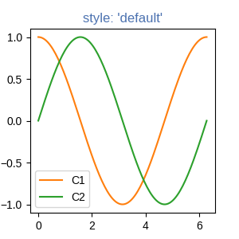
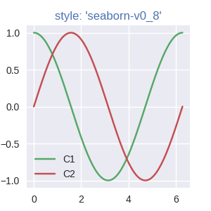

Note
Click here to download the full example code
Specifying Colors#
Matplotlib recognizes the following formats to specify a color.
Format |
Example |
|---|---|
RGB or RGBA (red, green, blue, alpha) tuple of float values in a closed interval [0, 1]. |
|
Case-insensitive hex RGB or RGBA string. |
|
Case-insensitive RGB or RGBA string equivalent hex shorthand of duplicated characters. |
|
String representation of float value
in closed interval |
|
Single character shorthand notation for some basic colors. Note The colors green, cyan, magenta, and yellow do not coincide with X11/CSS4 colors. Their particular shades were chosen for better visibility of colored lines against typical backgrounds. |
|
Case-insensitive X11/CSS4 color name with no spaces. |
|
Case-insensitive color name from
xkcd color survey with |
|
Case-insensitive Tableau Colors from 'T10' categorical palette. Note This is the default color cycle. |
|
"CN" color spec where Note Matplotlib indexes color at draw time and defaults to black if cycle does not include color. |
|
|
See also
- The following links provide more information on colors in Matplotlib.
Color Demo Example
List of named colors Example
"Red", "Green", and "Blue" are the intensities of those colors. In combination, they represent the colorspace.
Matplotlib draws Artists based on the zorder parameter. If there are no
specified values, Matplotlib defaults to the order of the Artists added to the
Axes.
The alpha for an Artist controls opacity. It indicates how the RGB color of the new Artist combines with RGB colors already on the Axes.
The two Artists combine with alpha compositing. Matplotlib uses the equation below to compute the result of blending a new Artist.
RGB_{new} = RGB_{below} * (1 - \alpha) + RGB_{artist} * \alpha
Alpha of 1 indicates the new Artist completely covers the previous color. Alpha of 0 for top color is not visible; however, it contributes to blending for intermediate values as the cumulative result of all previous Artists. The following table contains examples.
Alpha value |
Visual |
|---|---|
|

|
|

|
Note
Re-ordering Artists is not commutative in Matplotlib.
"CN" color selection#
Matplotlib converts "CN" colors to RGBA when drawing Artists. The Styling with cycler section contains additional information about controlling colors and style properties.
import numpy as np
import matplotlib.pyplot as plt
import matplotlib as mpl
th = np.linspace(0, 2*np.pi, 128)
def demo(sty):
mpl.style.use(sty)
fig, ax = plt.subplots(figsize=(3, 3))
ax.set_title('style: {!r}'.format(sty), color='C0')
ax.plot(th, np.cos(th), 'C1', label='C1')
ax.plot(th, np.sin(th), 'C2', label='C2')
ax.legend()
demo('default')
demo('seaborn0.8')
- 
- 
The first color 'C0' is the title. Each plot uses the second and third
colors of each style's rcParam["axes.prop_cycle"] (default: cycler('color', ['#1f77b4', '#ff7f0e', '#2ca02c', '#d62728', '#9467bd', '#8c564b', '#e377c2', '#7f7f7f', '#bcbd22', '#17becf'])). They are 'C1' and 'C2',
respectively.
Comparison between X11/CSS4 and xkcd colors#
The xkcd colors come from a user survey conducted by the webcomic xkcd.
95 out of the 148 X11/CSS4 color names also appear in the xkcd color survey. Almost all of them map to different color values in the X11/CSS4 and in the xkcd palette. Only 'black', 'white' and 'cyan' are identical.
For example, 'blue' maps to '#0000FF' whereas 'xkcd:blue' maps to
'#0343DF'. Due to these name collisions, all xkcd colors have the
'xkcd:' prefix.
The visual below shows name collisions. Color names where color values agree are in bold.
import matplotlib.colors as mcolors
import matplotlib.patches as mpatch
overlap = {name for name in mcolors.CSS4_COLORS
if f'xkcd:{name}' in mcolors.XKCD_COLORS}
fig = plt.figure(figsize=[9, 5])
ax = fig.add_axes([0, 0, 1, 1])
n_groups = 3
n_rows = len(overlap) // n_groups + 1
for j, color_name in enumerate(sorted(overlap)):
css4 = mcolors.CSS4_COLORS[color_name]
xkcd = mcolors.XKCD_COLORS[f'xkcd:{color_name}'].upper()
# Pick text colour based on perceived luminance.
rgba = mcolors.to_rgba_array([css4, xkcd])
luma = 0.299 * rgba[:, 0] + 0.587 * rgba[:, 1] + 0.114 * rgba[:, 2]
css4_text_color = 'k' if luma[0] > 0.5 else 'w'
xkcd_text_color = 'k' if luma[1] > 0.5 else 'w'
col_shift = (j // n_rows) * 3
y_pos = j % n_rows
text_args = dict(fontsize=10, weight='bold' if css4 == xkcd else None)
ax.add_patch(mpatch.Rectangle((0 + col_shift, y_pos), 1, 1, color=css4))
ax.add_patch(mpatch.Rectangle((1 + col_shift, y_pos), 1, 1, color=xkcd))
ax.text(0.5 + col_shift, y_pos + .7, css4,
color=css4_text_color, ha='center', **text_args)
ax.text(1.5 + col_shift, y_pos + .7, xkcd,
color=xkcd_text_color, ha='center', **text_args)
ax.text(2 + col_shift, y_pos + .7, f' {color_name}', **text_args)
for g in range(n_groups):
ax.hlines(range(n_rows), 3*g, 3*g + 2.8, color='0.7', linewidth=1)
ax.text(0.5 + 3*g, -0.3, 'X11/CSS4', ha='center')
ax.text(1.5 + 3*g, -0.3, 'xkcd', ha='center')
ax.set_xlim(0, 3 * n_groups)
ax.set_ylim(n_rows, -1)
ax.axis('off')
plt.show()
Total running time of the script: ( 0 minutes 1.132 seconds)